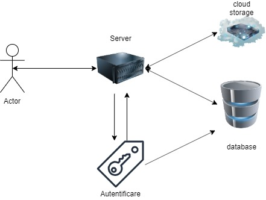
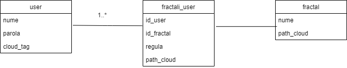

Community Draft
Tema aplicatiei: Se doreşte dezvoltarea unui cadru-suport (framework, platformă) pentru a vizualiza eficient diverse tipuri de fractali -- minimal, sisteme generative precum fractalii Lindenmayer (L-systems) implicând un număr foarte mare de reguli şi/sau iteraţii. Modalitatea de redare (2D şi 3D) va recurge la utilizarea uneia sau mai multor soluţii aliniate problematicilor cloud computing -- a se explora resursele oferite de Awesome Cloud Native.
Colocvial, un fractal este o figură geometrică fragmentată sau frântă care poate fi divizată în părți, astfel încât fiecare dintre acestea să fie (cel puțin aproximativ) o copie miniaturală a întregului.

Idee principala a dezvoltarii: Aplicatia va fi o aplicatie de tipul platforma, ce se va incadra in tipologia Server-Client (Tipologia client-server reprezinta un device centralizat de tip server la care mai multi clienti "slabi" sunt conectati. Clientii se bazeaza pe server pentru resurse precum fisiere sau chiar putere de procesare.). Odata logat, clientul v-a putea alege diferite pattern-uri si reguli pentru generarea fractalilor. Atat pattern-urile de adancime 1, cat si anumite pattern-uri dorite de utilizatori, vor fi stocate pe un server de tip Cloud.
Usecase:Utilizatorul se conecteaza la server. Server-ul face un request de autentificare. Dupa autentificare server-ul face un request la cloud si da raspuns utilizatorului galeria de fractali si editorul de reguli. In cazul in care doreste utilizatorul, server-ul poate salva anumite reguli in baza de date precum si anumite patternuri obtinute prin generarea fractalilor. 
Arhitectura baza de date:
Baza de date va fi alcatuita din 3 tabele.
Tabel user, pentru managementul userilor.
Tabela fractal, pentru managementul fractalilor.
Tabela fractali_user, pentru inregistrarea actiunilor userilor pe platforma, dar, si pentru stocarea destinatiilor fractalilor salvati pe cloud sub forma (user_tag.id_fractal).

HTML5(HyperText Markup Language), o tehnologie nucleu pentru internet, propusa intial pentru browser-ul Opera, este un limbaj pentru structurarea si prezentarea continutului WWW(World Wide Web)
CSS(Cascading Style Sheets), este un standard pentru formatarea elementelor unui document HTML.
Node.js este un runtime environment pentru javascript care executa cod javascript inafara browser-ului, dand astfel oportunitatea programatorilor sa foloseasca javascript pentru partea de back-end a aplicatiilor.
Sequelize este un sistem de gestiune a bazelor de date relaționale print intermediul folosind mapping intre obiecte si tabele.
Cloud storage este un model de stocare a datelor.